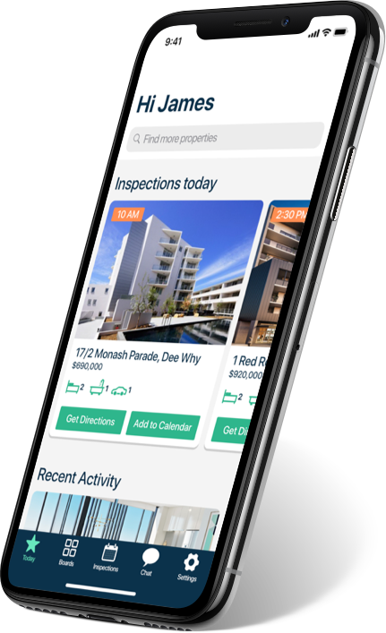
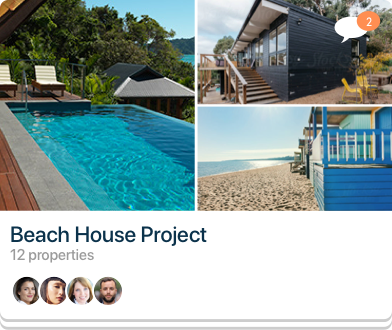
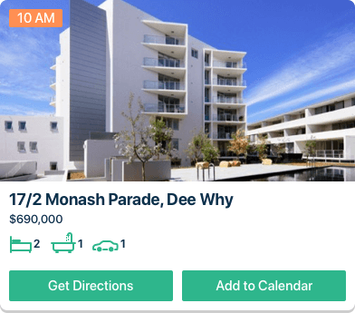
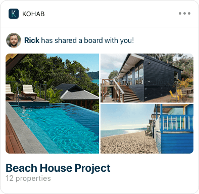

The Solution
All that you need
You need to have a good reason to have a native app when you have a good experience on your responsive website. The Kohab app was designed with this in mind. The features of the platform were cut down to the core needs of a user who is going to see properties. This made for a really streamlined experience.




